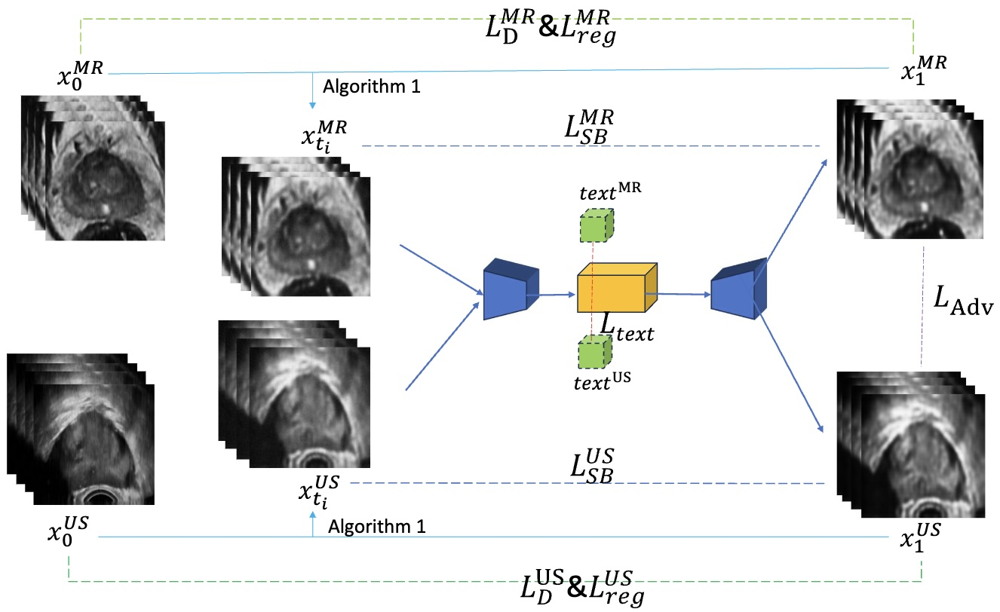
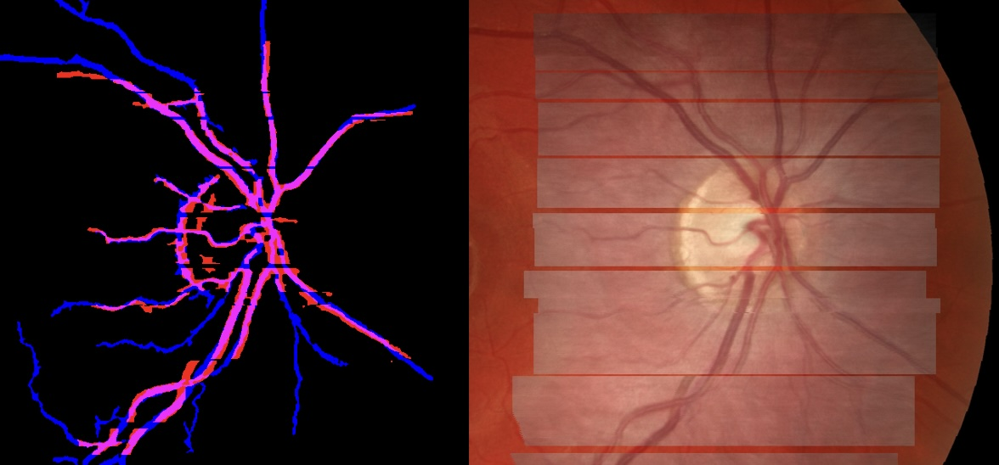

Multi-modal Medical Image Registration
Learning-based Multi-modal Image Translation and Registration Techniques


Aim
Different imaging techniques provide unique information; for instance, MRI reveals soft tissue details, while CT scans offer better images of bone structures. Combining these images offers a comprehensive view of anatomy and pathology. By overlaying images from different modalities, physicians can better understand the location, extent, and nature of a disease, leading to more accurate diagnoses. To achieve this, multi-modal image registration is essential. Accurate registration helps planning surgeries, radiation therapy, and other treatments. Additionally, registering images taken at different times or with different modalities allows for precise monitoring of disease progression or response to treatment.
Research team
- Alin Achim and N. Anantrasirichai: Lead academics
- Stefanos Bolomytis: Collaborator
- Xudong Ma: PhD student
Methods
- Partial-Modality Translation Based on Diffusion Models (PMT) (MIUA2024)

- OCT/Fundus Image Registration (CMIG, 2014)

Downloads
Publications
- PMT: Partial-Modality Translation Based on Diffusion Models for Prostate Magnetic Resonance and Ultrasound Image Registration. X Ma, N Anantrasirichai, S Bolomytis, A Achim. Medical Image Understanding and Analysis. 2024
[ PDF] - Adaptive-Weighted Bilateral Filtering and Other Pre-processing Techniques for Optical Coherence Tomography. N. Anantrasirichai, L. Nicholson, J. E. Morgan, I. Erchova, K. Mortlock, R. V. North, J. Albon, and Alin Achim. Computerized Medical Imaging and Graphics. 2014
[ PDF] [ BibTeX]
Datasets
Related research
Related publications from VI-Lab
- TaGAT: Topology-Aware Graph Attention Network For Multi-modal Retinal Image Fusion. X Tian, N Anantrasirichai, L Nicholson, A Achim. Medical Image Computing and Computer Assisted Intervention. 2024
[ PDF] [ Code] - DUBLINE: A Deep Unfolding Network for B-line Detection in Lung Ultrasound Imagesy. T Yang, N Anantrasirichai, O Karakuş, M Allinovi, HC Koydemir, A Achim. IEEE International Symposium on Biomedical Imaging. 2024
[ PDF] - OCT2Confocal: 3D CycleGAN based Translation of Retinal OCT Images to Confocal Microscopy. X Tian, N Anantrasirichai, L Nicholson, A Achim. IEEE International Symposium on Biomedical Imaging. 2024
[ PDF] [ CODE] - Parasitic Egg Detection and Classification in Low-cost Microscopic Images using Transfer Learning. T Suwannaphong, S Chavana, S Tongsom, D Palasuwan, T H Chalidabhongse, and N Anantrasirichai. SN Computer Science. 2023
[ PDF] [ Dataset] - ICIP 2022 Challenge on Parasitic Egg Detection and Classification in Microscopic Images: Dataset, Methods and Results. N Anantrasirichai, TH Chalidabhongse, D Palasuwan, K Naruenatthanaset, T Kobchaisawat, N Nunthanasup, K Boonpeng, X Ma, and A Achim. IEEE International Conference on Image Processing. 2022.
[ PDF] [ Dataset] [ Website]
Detection in different modalities
- Anomaly detection for the identification of volcanic unrest in satellite imagery. RG Popescu, N Anantrasirichai, J Biggs. IEEE International Conference on Image Processing. 2024
[ PDF] [ Project] - Object Recognition in Atmospheric Turbulence Scenes. D Hu, N Anantrasirichai, European Signal Processing Conference. 2023.
[ PDF] [ CODE] - Detecting Ground Deformation in the Built Environment using Sparse Satellite InSAR data with a Convolutional Neural Network. N. Anantrasirichai, J. Biggs, K. Kelevitz, Z. Sadeghi, T. Wright, J. Thompson, A. Achim and D. Bull. IEEE Transactions on Geoscience and Remote Sensing. 2020.
[ PDF] [Project] - A Deep Learning Approach to Detecting Volcano Deformation from Satellite Imagery using Synthetic Datasets. N. Anantrasirichai, J. Biggs, F. Albino, and David Bull. Remote Sensing of Environment. 2019.
[ PDF] [ BibTeX] [CODE] [Project]